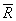

X bar -R 관리도
Stat>Control Charts>X bar-R 1. X bar-R 관리도의 개요 계량형 관리도 중 대표적인 X bar-R 관리도는 생산공정의 평균과 표준편차를 함께 관리한다. 공정평균 관리를 위해 X bar관리도를, 공정의 표준편차 관리를 위해 범위를 이용한 R 관리도를 적용하여 이를 묶어서 X bar-R 관리도라 한다. X1X2...Xn을 평균이 μ, 표준편차가  인
정규 모집단으로부터 추출한 크기 n의 표본이라 할 때 표본 평균 인
정규 모집단으로부터 추출한 크기 n의 표본이라 할 때 표본 평균  는 평균이 μ, 표준편차가
인 정규분포를 따른다. μ, 를
알고 있거나 목표치가 주어진 경우에 대한 중심선과 3
관리한계선은 아래와 같다.
는 평균이 μ, 표준편차가
인 정규분포를 따른다. μ, 를
알고 있거나 목표치가 주어진 경우에 대한 중심선과 3
관리한계선은 아래와 같다. |
 단, A = 3/  이다. 이다. |
| 만약, μ, 를
모르는 경우에는 μ의 추정치로
, 의 추정치로 /d2를
이용하여 중심선과 3 관리한계선을
구할 수 있다. |
 단,  이다. 이다. |
범위 R의 평균 및 표준편차는 각각  및
및  이다. 먼저 를
알고 있는 경우 R관리도의 중심선 및 3
관리한계선은 다음과 같다. 이다. 먼저 를
알고 있는 경우 R관리도의 중심선 및 3
관리한계선은 다음과 같다. |
 |
| 를
모르는 경우 의 추정치로 관리한계선을
구하면 아래와 같다. |
 단,  이다. 이다. |
|
2. X bar -R관리도의 해석 - 분포가 혼합된 경우 각 분포의 평균은 불변이나 분포의 혼합비율이 변할 때 X bar관리도에 그 영향이 나타나게 된다. - 품질의 갑작스런 변화나 품질분포의 치우침을 가져오는 요인이 발생하는 경우 X bar
관리도상의 이상치가 R관리도상의 이상치에 따라 발생하게 된다. |
 |
| 3.1 데이터의 입력 MINITAB Worksheet에 아래와 같이 데이터를 입력한다. |
 |
| 3.2 MINITAB의 실행 ① Stat > Control Charts > X bar-R…선택 |
 |
| ② Subgroups across rows of에 4개의 고무입자의
크기에 해당하는 데이터 'x1, x2, x3, x4'를 선택한다. |
 |
| ③ OK를 클릭한다 Graph 창에 나타난 결과 3.3 결과 해석 |
 |
| X bar관리도와 R관리도를 보면 모든 점들이 관리한계선 안에
타점 되어 있으며 특별한 패턴이 있는 것으로 보이지는 않는 것으로 보아 이 프로세스는 안정적이라 판단한다. |